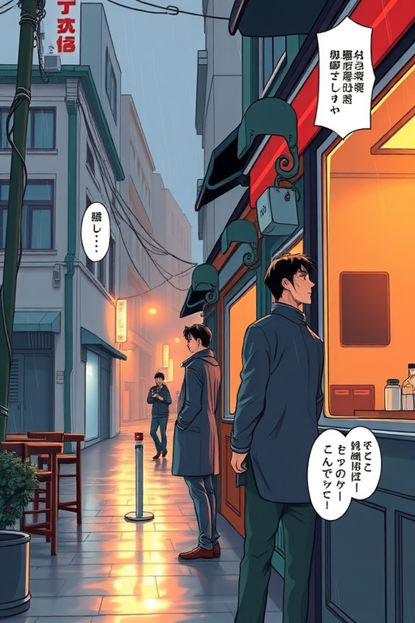
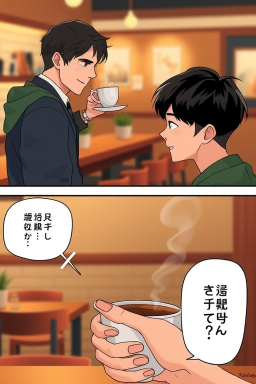
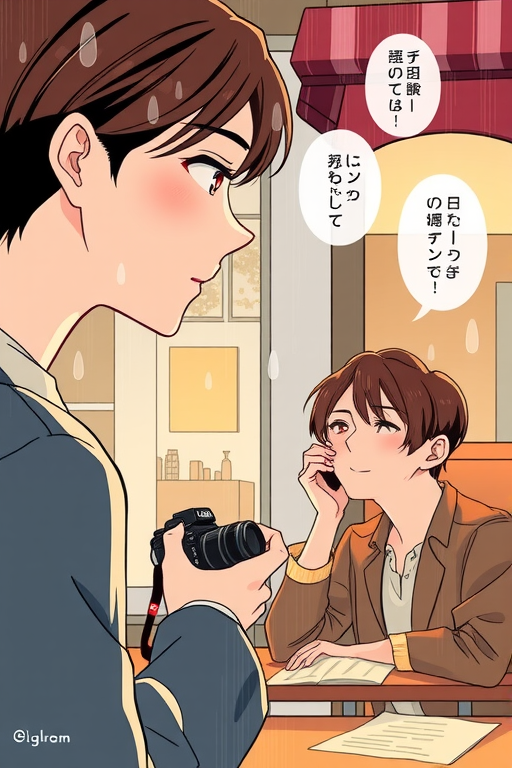

1. 닫힌 시간의 카페
ComfyUI / 3컷 / wide rainy street establishing panel, diagonal split close-up, small inset reaction panel

서윤
마감했는데... 많이 젖으셨네요.
도하
비가 갑자기 세져서요. 잠깐만 있어도 될까요?
서윤
따뜻한 거 한 잔 드릴게요.
2. 말보다 먼저 놓인 컵
ComfyUI / 4컷 / top horizontal panel, two middle vertical panels, bottom emotional close-up panel

도하
이 집 커피는 처음인데 향이 좋네요.
서윤
오늘처럼 추운 날엔 조금 진하게 내려요.
도하
...기억해둘게요.
낯선 사람의 목소리가 이상하게 오래 남았다.
3. 다시 올 이유
ComfyUI / 3컷 / large emotional close-up, narrow side panel, wide ending panel with rain stopping

도하
다음엔 손님으로 올게요. 비 때문 말고.
서윤
그럼 그땐 문 열어둘게요.
비가 그친 뒤에도, 카페 안은 조금 더 따뜻했다.